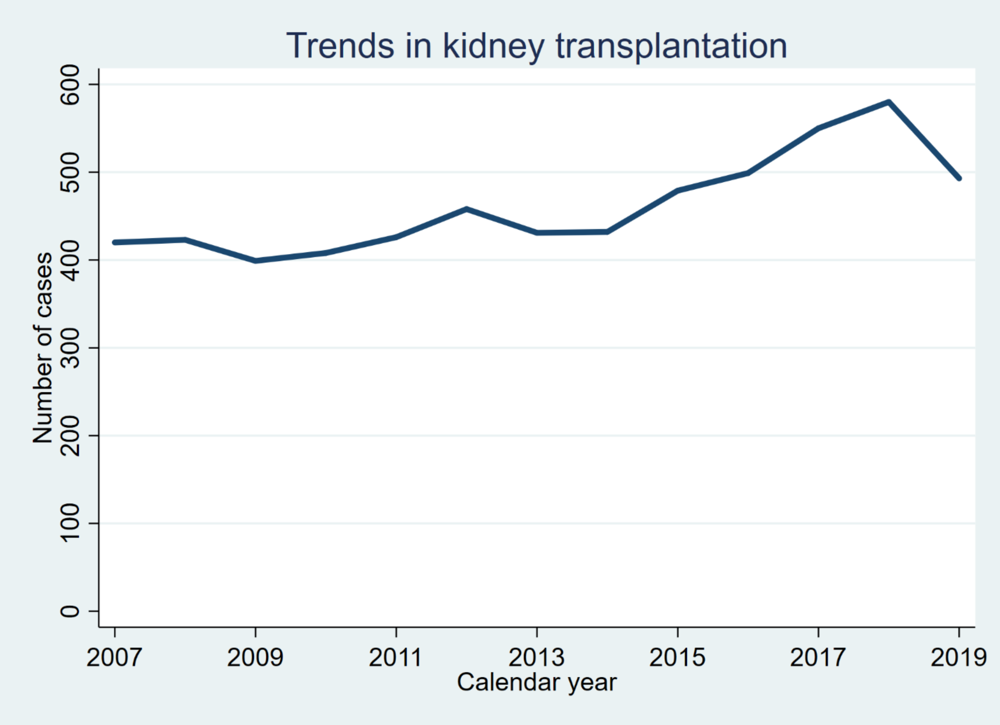
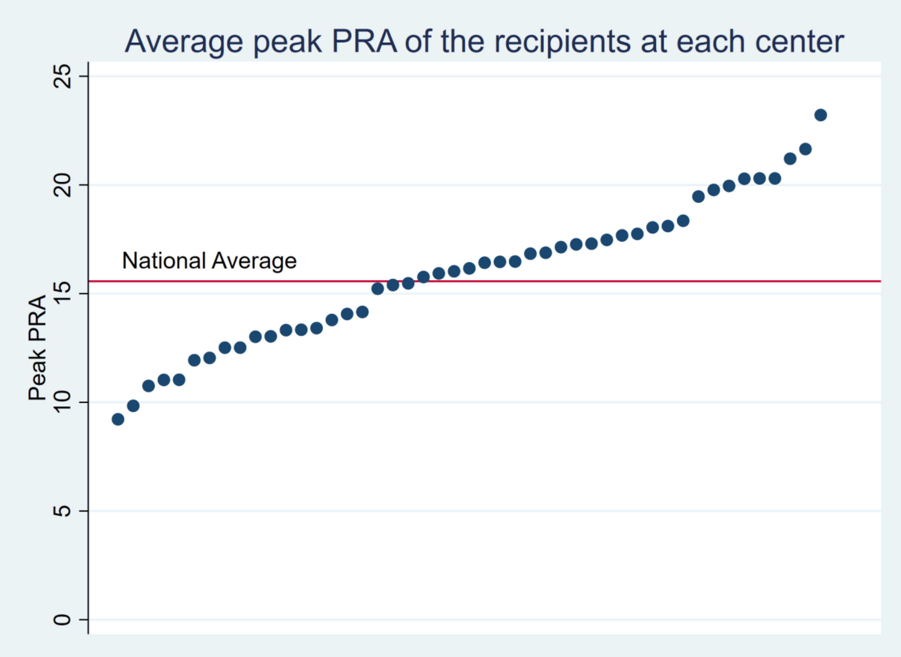
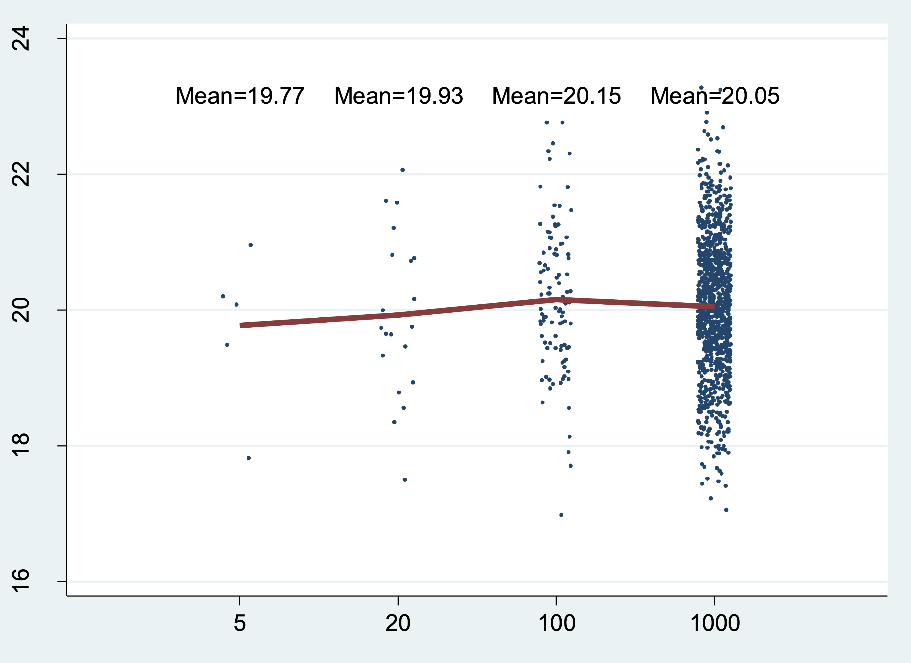
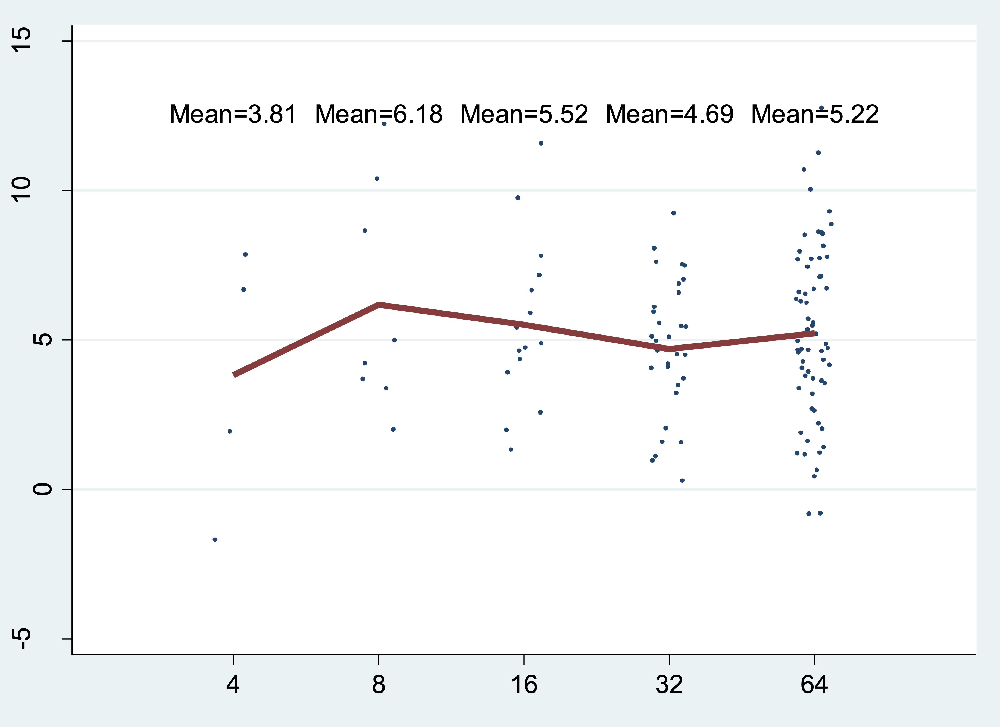

Homework 7#
NOTE: The figures you are going to “replicate” have a “Classic” Stata look. However, Stata made some drastic changes in the Spring of 2023 with the release of Stata 18. You’ll get full points if your .do file script reproduces these color formats regardless of the Stata version running on our computers. Embrace Stata version, c(version), ambiguity! See below
global repo https://github.com/jhustata/basic/raw/main/
//Let us pay homage to "Classic" Stata color schemes in our final homework!
if c(version)>17 {
set scheme s2color //stcolor is the default in Stata 18
}
else {
di "you're good to go!"
}
(late assignments will not be accepted for graduating students)
Write a .do file which performs the tasks described below. Your .do file should be called
hw3.lastname.firstname.do. Do not submit your log files as part of the assignment.
Codebook#
Variable |
Description |
Values |
|---|---|---|
transplants.dta |
||
|
Center ID |
Integer |
|
Date of transplant |
Date |
|
Recipient has history of previous kidney transplant? |
Binary (1=Yes/0=No) |
|
Recipient’s age |
Integer |
|
Recipient’s BMI |
Numeric |
Question 1#
Clear the memory and load tx.dta. Drop all observations with missing values on transplant_date. Reproduce the following graph as precisely as possible.
This graph shows a line plot of the number of cases performed in each calendar year. Be mindful about the thickness of the line, the main title, and the axis labels and titles.
use ${repo}tx, clear
gen year = year(transplant_date)
Save the graph as q1_[yourname].png

Question 2#
Clear the memory and load tx.dta. Drop all observations with missing values on peak_pra. Reproduce the following graph as precisely as possible.
This graph shows a scatter plot of peak_pra and age, stratified by prev_ki. Observations with
prev_ki == 1 are shown in red. Be mindful about the color (“blue” and “red” in Stata color codes) and
size of the markers, the axis titles, and the legend.
Save the graph as q2 _[yourname].png

Question 3#
Clear the memory and load tx.dta. Drop all observations with missing values for peak_pra. Reproduce the following graph as precisely as possible.
Calculate the average of peak_pra at each transplant center (ctr_id). Display the average value of
peak_pra after sorting. The location of the text label “National Average” can be hardcoded (i.e.
manually specify the location; about x=7 and y=17). Other markers and lines should NOT be hardcoded
and should be derived by your script using the dataset.
Save the graph as q3 _[yourname].png

Additional Credit (Maximum \(+5\))#
Use the Extra credit challenge DropBox#
Write a program called sampmean to plot random data drawn from a normal distribution. sampmean takes a list of numbers representing different sample sizes. It also takes (optionally) a mean and standard deviation for the normal distribution. If we run
sampmean, at(5 20 100 1000) mean(20)
We get a graph like this:

In this example, the program generates four sets of normally distributed random numbers (one set of 5 numbers, one set of 20, one set of 100, and one set of 1000) and calculates the mean for each set. It also plots each randomly generated number (as points) and the group mean (as a red line). The group mean also appears above each group as text.
Here are some more examples. The exact output will depend on the random number seed you use.
sampmean, at (4 8 16 32 64) mean(5) sd(3)

sampmean, at(100 200 300) mean(5) sd(2) uniform

In the last example, the distribution is a uniform distribution instead of a normal distribution.
Hints:
You can use the keyword
numlist(for a list of numbers) just as you do with avarlist(list of variables)The uniform distribution from 0 to 1 has mean 0.5 and standard deviation sqrt(1/12).
Note: this problem is pretty hard! We expect that few people will solve the whole thing, but we will give partial credit for a partial (working) solution. If your program only works partly, then explain in the comments, like this: